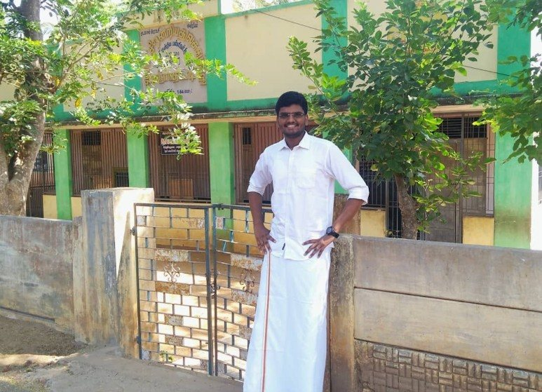
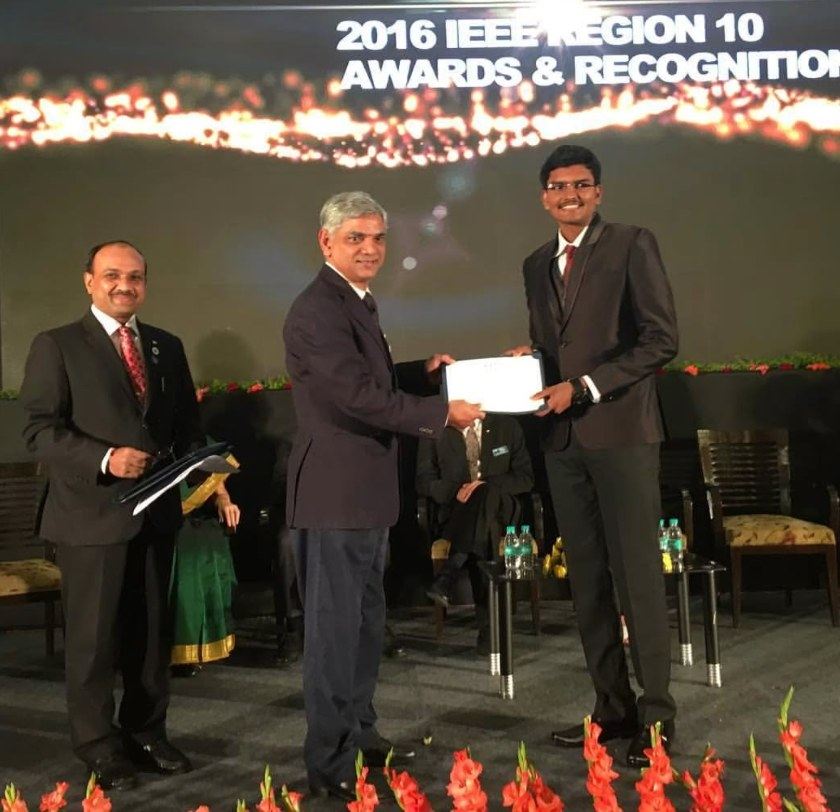
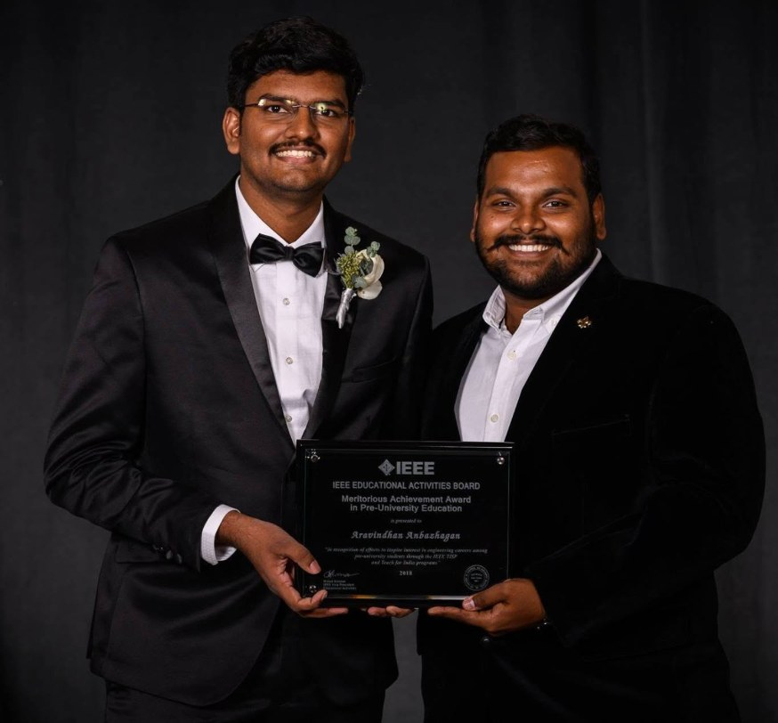
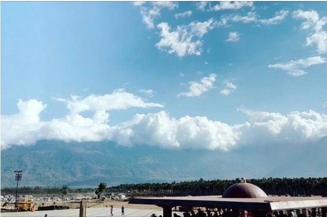
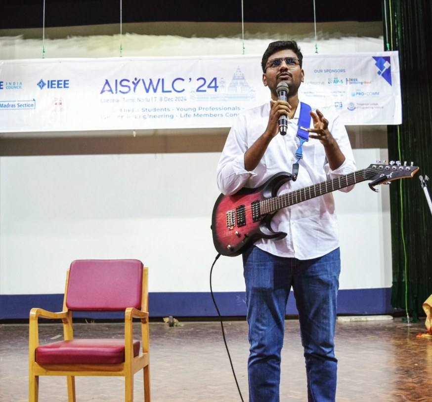
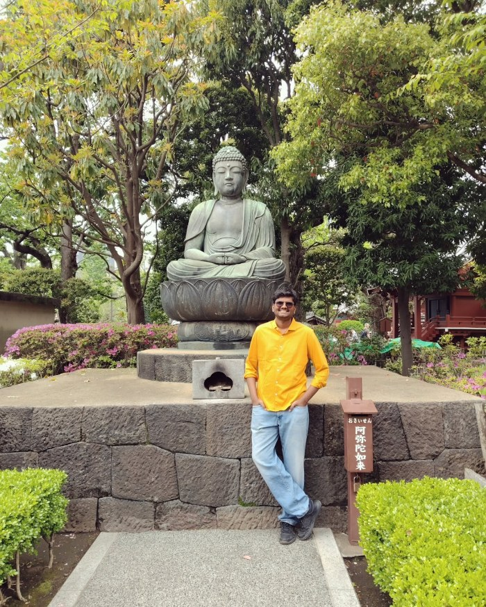
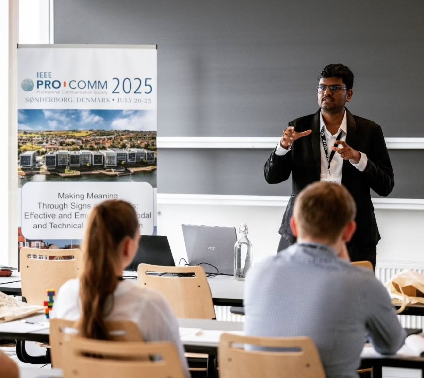
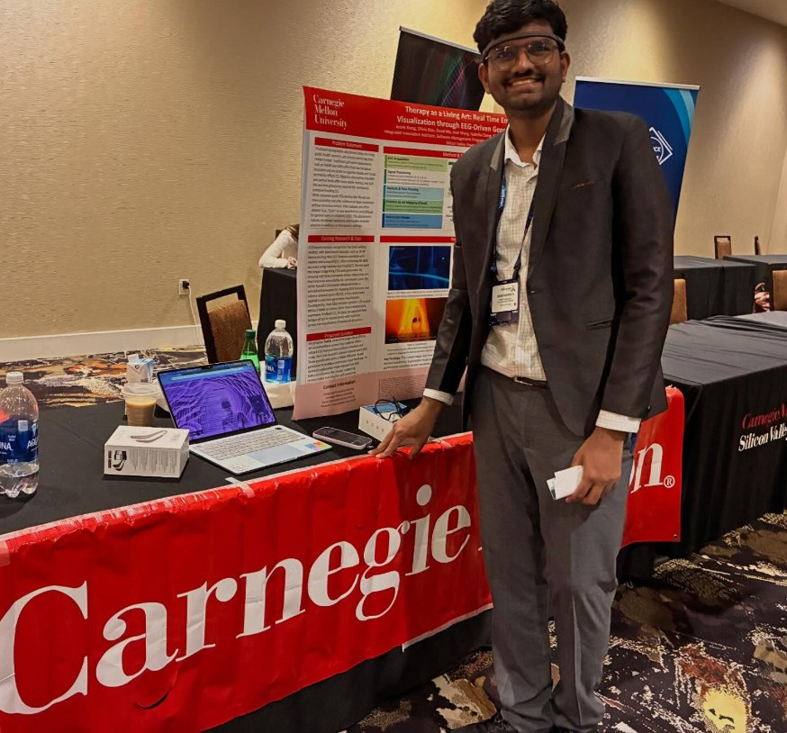
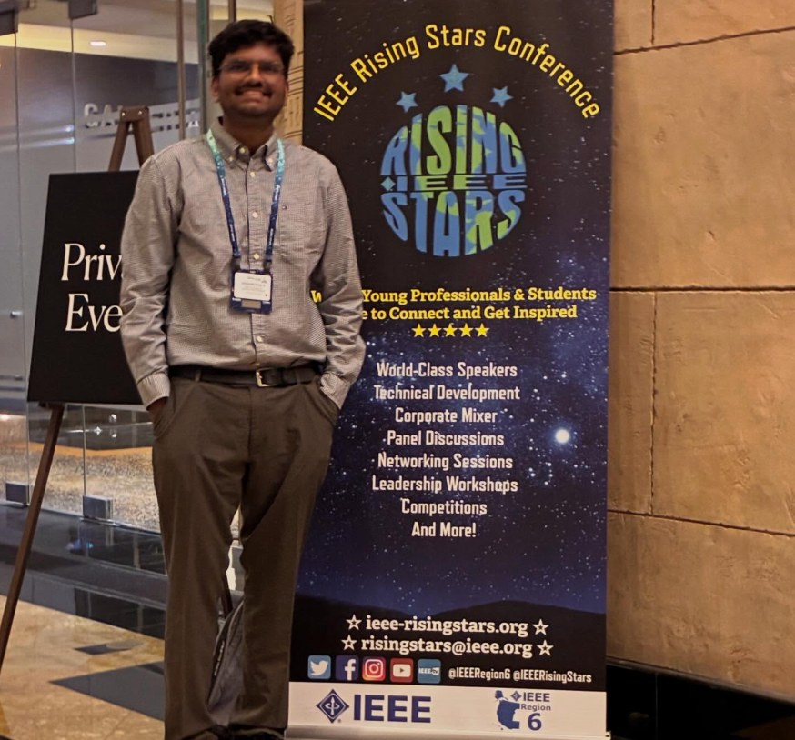

My Story
From Erurndavadi to Washington
My story starts in Erurndavadi, about 21 km from Kumbakonam in Tamil Nadu, and runs through classrooms, public service and spiritual practice to policy research in Washington.
Tamil is my first language. I studied in Tamil medium until Class 8, and every step since has carried something from Erurndavadi.
Timeline
- Early years
Erurndavadi, Tamil Nadu
Class 1 at the Panchayat Union Elementary School in Erurndavadi.
- to 2008
Ramakrishna Mission Sarada Vidyalaya, Chennai
Middle school in T. Nagar, studying in Tamil medium through Class 8.
- to 2012
Sivanthi Matriculation Higher Secondary School
English became my medium of instruction from Class 9.
- to 2016
Computer Science Engineering
Bachelor's degree at Sri Muthukumaran Institute of Technology, Chennai. I began volunteering with IEEE in 2013.
- 2016 to 2018
Teach For India Fellow
Taught Grades 4 and 5 in MGR Nagar, Chennai.
- 2018 to 2020
Teach For India staff
Fundraising and communications.
- May 2020 to 2021
Educational YouTube channel
Ten months making lessons for students online.
- 2021 to 2022
School Education Department, Government of Tamil Nadu
Project Associate on the Out of School Children initiative.
- June 2022 to February 2023
Sadhanapada at the Isha Yoga Center
The eight month Sadhanapada program of practice and volunteering at the Isha Yoga Center near Coimbatore.
- March 2023 to May 2025
Civil services preparation
Two years preparing for India's civil services.
- 2025
Carnegie Mellon University, Heinz College
Began the Master of Science in Public Policy and Management, later moving to the Washington, D.C. track.
- March 2026
IEEE Congressional Visits Day
With IEEE-USA in Washington, meeting congressional offices on technology policy.
- May 2026
Friedman Fellowship
Another step closer to technology policy work in Washington.
- June 2026
CSET, Georgetown University
Semester Researcher on AI chips and the AI workforce.
Photos
Moments along the way









The inner path
Practice and volunteering
I spent eight months in Sadhanapada at the Isha Yoga Center. In the United States I volunteer with Isha's Youth Outreach in the Americas and have led Miracle of Mind sessions, including one at CMU Heinz College in September 2026.
Practices I have learned
- Inner Engineering and Shambhavi MahamudraOctober 2009
- Isha Kriya2011
- Shoonya Intensive2015
- Angamardana2015, no longer practicing
- Classical Hatha Yoga, an eight day program at the Isha Yoga CenterMay 2017
- Sadhanapada at the Isha Yoga Center2022 to 2023
- Samyama2023